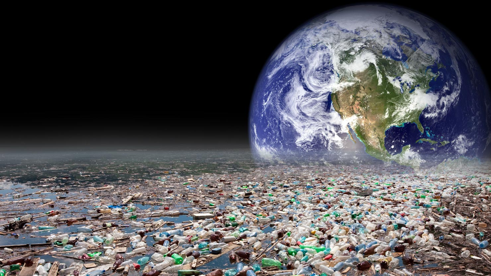
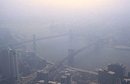
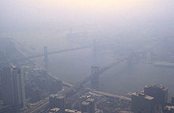

La Contaminación 

La Contaminación se denomina a la presencia en el ambiente de cualquier agente químico, físico o biológico nocivos para la salud o el bienestar de la población, de la vida animal o vegetal. Esta degradación del medio ambiente por un contaminante externo puede provocar daños en la vida cotidiana del ser humano y alterar las condiciones de supervivencia de la flora y la fauna. Alrededor de 2 millones de personas podrían morir cada año por alguna causa atribuible a la contaminación atmosférica, asegura la Organización Mundial de la Salud. Según este estudio la mayor cantidad de muertes se producen en los países en desarrollo donde se concentran altas densidades de partículas nocivas para la salud.
La contaminación es la introducción de sustancias en un medio que provocan que este sea inseguro o no apto para su uso.1 El medio puede ser un ecosistema, un medio físico o un ser vivo. El contaminante puede ser una sustancia química, energía (como sonido, calor, luz o radiactividad). Es siempre una alteración negativa del estado natural del medio, y por lo general, se genera como consecuencia de la actividad humana considerándose una forma de impacto ambiental.
 

La contaminación puede ocurrir, en el suelo, la tierra y el aire. Se puede dividir en clases según los agentes contaminantes o el medio afectado:
La contaminación puede clasificarse según el tipo de fuente de donde proviene, o por la forma de contaminante que emite o medio que contamina. Existen muchos agentes contaminantes entre ellos las sustancias químicas (como plaguicidas, cianuro, herbicidas y otros.), los residuos urbanos, el petróleo, o las radiaciones ionizantes.
Nuestro planeta se encuentra expuesto a numerosos contaminantes que perjudican al bienestar y a la salud de los seres vivos que habitan en él. La Organización de Naciones Unidas destaca como culpables de la contaminación y el efecto invernadero a las ciudades porque “ellas ocupan el 2% del territorio mundial y producen el 70% de estos gases”. Esta organización advierte que la situación podría empeorar porque muchos países están teniendo un crecimiento muy acelerado, como Brasil. China e India, y a su vez están emitiendo gases contaminantes. Las principales causas de la contaminación son:
La contaminación puede clasificarse según el tipo de fuente de donde proviene, o por la forma de contaminante que emite o medio que contamina. Existen muchos agentes contaminantes entre ellos las sustancias químicas (como plaguicidas, cianuro, herbicidas y otros.), los residuos urbanos, el petróleo, o las radiaciones ionizantes.
La contaminación ambiental deteriora cada vez mas a nuestro planeta y a nosotros mismos pues según investigaciones al respirar el aire contaminado esto afecta nuestra salud cardiovascular por lo que normas estrictas de aire limpio contribuirían a una mejor salud con efectos en gran escala. Otra consecuencia es el debilitamiento de la capa de ozono, que protege a los seres vivos de la radiación ultravioleta del Sol, debido a la destrucción del ozono estratosférico y esto provoca el calentamiento global.La contaminacion al medio atenta contra la vida de plantas, animales y personas, genera daños físicos en los individuos, convierte en un elemento no consumible al agua y hace que en los suelos contaminados no sea posible la siembra. Esto afecta a demás el clima y las actividades realizadas por el ser humano dañandolo y perjudicándole.
La destrucción de la capa de ozono, la contaminación del agua, el dióxido de carbono, acidificación, erosión del suelo, hidrocarburos clorados y otras causas de contaminación como el derramamiento de petróleo están destruyendo nuestro planeta, pero la "causa que produce las demás causas" somos nosotros mismos...
Algunas medidas preventivas que podrias llevar a cabo son:
Es importante aprender a respetar a nuestro ambiente, las cosas que le pasan son por nuestra causa, es nuestra responsabilidad cuidar de nuestro planeta.
En mi comunidad, algunos problemas de la contaminacion son: la basura y la quema de ésta. Esto mismo provoca que las calles se vean mal, e incluso que el gobierno nos llame la atencion por la culpa de la gente que no tiene moral, ni valores etc. Es importante tener una buena imagen, mas allá de lo que las otras comunidades puedan decir, es aún mas importante tener limpia la zona para beneficio propio y el del ambiente, comunidad, planeta etc. Otro problema que sobreabunda en mi comunidad, es la que de residuos o la quema de basura, esto provoca la produccion de CO2 y a su vez, la contaminación del aire.
Es importante reducir las emisiones de CO2 de lo contrario, el aire tarde o temprano se volvera demaciado tóxico.
En mi comunidad, lamentablemente la gente ya se hizo el hábito de dejar su basura en las esquinas de las calles. Eso, seria una causa del porque la contaminación, la gente es floja, y sucia, y si eso se les enseña a los pequeños, entonces no hay ni habrá un cambio para bien, sino al contrario, cada vez la cosa se va a poner peor. Si las calles estan en mal estado, o si el agua esta sucia, o el aire se encuentra invadido por agentes contaminantes como el CO2 entre otros, lo unico que se provocaria es que la calidad de vida de todas las personas desmejore, y a su vez, se provoquen mas enfermadades respiratorias o incluso digestivas, provocando que se deteriore el ambiente que nos rodea.
Una forma sencilla para combatir este mal, seria que nos propusieramos a dar una especie de conferencia para tratar de hacer entrar en razón a la gente. O bien, repartir pequeños volantes o folletos donde explique de una manera un poco cruda o directa, el porque debemos cuidar de nuestro planeta. El problema en el que mas deberíamos enfocarnos, sería el de la basura.
Para Reflexionar un poco sobre este tema, ve el siguiente video, te gustará.